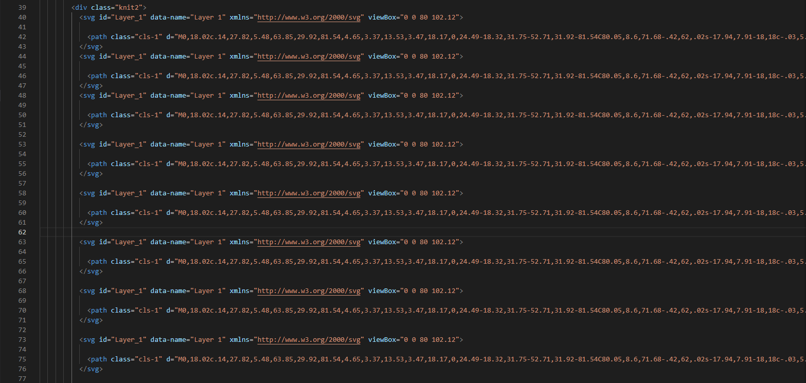
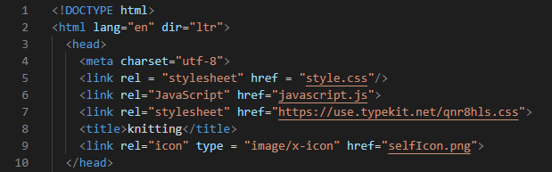

Knit and Code Documentation


I created a simple wireframe highlighting the basics to cover.

The following section represents pixel art in the form of the stockinette stitch.
The issue with coding the website was mostly around knowing it was inefficient to copy and paste 50+ svg tags to create this board. I knew there was a connection to a javascript for loop, but I had difficulty connecting it to HTML. At one point, I gave up and copy and pasted almost 200 lines of code worth of svg tags.

However, I was eventually able to find the error, which wasn't in my javascript file, but the reference to the .js file in the head of the HTML.

I believe this error was due to my previous code editor, Atom, shutting down. I am now getting used to coding on VS Code, which has many more auto-fill suggestions which I need to be more aware of.
However, I was able to create an interesting looking site with more efficient code using Javascript. I am still finding issues with the lengthiness of connecting Javascript and HTML and CSS in a way that makes sense. I am currently looking into ways that Javascript can modify the left position, for example, without having to go through the steps of removing the "px", turning it into an integer, performing computations on that number, and returning it back to a string with a "px."
Click here to view the site.